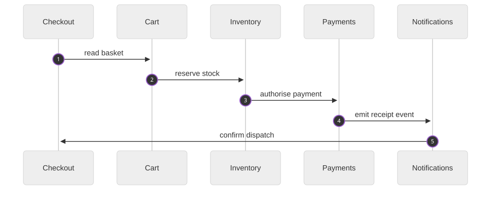
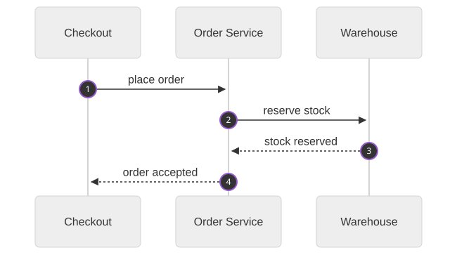

Rubrics - A Lightweight Decision Framework
You cannot move for the word rubric right now. Every conversation about AI evaluation, LLM-as-a-judge or agent quality eventually lands on one. The word has been dragged out of the classroom, where teachers used it to grade essays, and into our Slack channels. That is no bad thing, because buried under the hype is one of the cheapest, most portable tools engineering has: a written-down idea of what good looks like, agreed before anyone has to judge anything.
This post is about that idea. Not the machine-learning detail, not the prompt tricks; the theory around all of that is somebody else’s article. What interests me is that a rubric is a lightweight framework for decisions. You do not need a mathematics degree. You do not need to train a model. You need words, arranged honestly, in a table or a list, before the moment of judgement arrives.
What a rubric actually is
A rubric is a scoring guide written in advance. It takes something fuzzy — is this code good?, is this design simple? — and breaks it into named criteria, each with described levels. Not numbers first. Words first. The numbers, if you want to attach any at all, come after the description, as shorthand for the words; never instead of them.
It looks like this:
| Criterion | Weak | Good | Penalised |
|---|---|---|---|
| Test quality | Tests assert implementation details | Tests assert behaviour, run on every change | No tests, or tests that cannot fail |
| Failure story | No answer to “what happens if this breaks?” | Failure modes named, visible, recoverable | Silent failure; the system lies |
| Understandability | You need the author present | A competent stranger can reason about it | Even the author needs a week |
That is a rubric. Three criteria, three levels, written in ordinary language. A person — or an AI, if that is your judge — reads the words, finds the level that matches reality, and the judgement is done. Compare that to the alternative masquerading as it: a pile of raw metrics, weights and thresholds. That is a scoring pipeline, a different thing. It is useful, but it hides its values inside formulas nobody argued about. A rubric puts the values on the table first, where they can be argued with, amended and owned by the team doing the work.
Rubrics let you speak precisely without the mathematics
There is a peculiar pressure in engineering right now that to be rigorous, your judgements must emerge from a formula: an exponential curve here, a weighted sum there, a threshold you discovered by staring at a dashboard. Rigour is not the exclusive property of mathematics. A rubric gives you a formal way to say what you mean — explicit criteria, described levels, a standard agreed before judgement — and it survives contact with teams, code review and argument in a way a hand-tuned formula rarely does.
The mathematics can come later, if it is ever needed. The rubric is the contract; any scoring you layer on top is an implementation detail, swappable and debatable without touching what you actually believe about quality. That is the superpower. The rubric holds the meaning. Everything else is machinery.
Worked example: the sequence diagram with too many columns
Sequence diagrams are where architecture reviews go to die. You have seen the one: a flow smeared across so many participants that the diagram stops being documentation and becomes proof that nobody owns anything. “Too many participants” is a real feeling, but it is not a decision. Write it down as a rubric and it becomes one:
| Criterion | Weak | Good | Penalised |
|---|---|---|---|
| Participants in one flow | 1–2, which probably means several flows hiding as one | 3–5, each owning one clear concern | 6+ — sprawl; the flow should be split |
| Hops (depth) | — | Any number, if each hop earns its place | Depth costs grow gently, roughly one-per-step |
| Actor ownership | One participant “talks to everything” | Each participant owns one concern | Blurred roles; nobody can say who does what |
Now apply it. First, the offender. Five participants — Checkout, Cart, Inventory, Payments, Notifications — in a single flow. Against the rubric this scores: participants in the penalised zone if one more joins, ownership already smeared down the chain, and it reads nothing like a story.

The fix is not a cleverer diagram. It is a split. The wide flow above is really at least two diagrams wearing one costume. Keep the story local — who placed an order, and who fulfilled it — and push the rest into its own picture:

Three participants, one story, every hop earning its place. The same rubric that condemned the first diagram approves this one — and because the rubric is written down, the disagreement you have with yourself (or with me, in the comments of your pull request) is about criteria, which are discussable, not about vibes, which are not.
Depth against width — my opinion
This is the part where I tell you what I think, and you are welcome to push back. In the diagrams above, depth was never the problem. Each hop is essential work: something that must happen, in order, and can only happen after its predecessor. The cost of depth tends to grow gently, roughly one-per-step. That is my opinion from practice, not physics.
Width is different. Every additional participant multiplies the number of things that can go wrong, the number of conversations a reader must hold, and the number of places a failure can hide. The wider the flow spreads across actors, the less reliable the whole picture tends to be — and the more of it is accidental: our chosen boundaries, not the problem we were given. That is why the rubric punishes participant sprawl and tolerates depth. Spreading work across many systems, and keeping a story sequential, are not equally bad things. (In my experience.)
Your turn
I said earlier that rubrics look cheap. They feel cheap — a table of words, no tooling, no training budget — but I would not agree that they are. A rubric is an essential part of navigating the growing number of decisions in engineering and in life: every year hands you more options, more tooling, more people to align, and the alternative to a written standard is vibes, politics or whoever spoke loudest. The question closing this out is the one I would like answered more than any of the above: what rubrics might you consider? What would a “good” pull request look like in words, before anyone looks at one? A design document? An incident report? A candidate architecture? Write one level of one criterion this week — not the whole matrix, just one honest sentence about what good looks like — and see how fast the arguments around you turn into discussions.